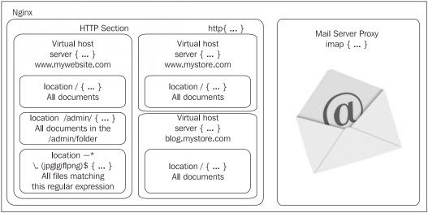

Cấu hình nginx
File cấu hình chính là conf/nginx.conf.
Giới thiệu module Http trong nginx
Module HTTP Core là thành phần chứa tất cả các khối, chỉ thị và các biến cơ bản của máy chủ HTTP. Mặc định module này được cài đặt trong khi biên dịch, nhưng không được bật lên khi nginx chạy, việc sử dụng module này là không bắt buộc.
Module này là 1 trong những module tiêu chuẩn lớn nhất của nginx – nó
cung cấp 1 số lượng lớn các chỉ thị và biến. Để có thể hiểu được tất cả
các yếu tố này và vai trò của chúng, chúng ta sẽ bắt tay vào tìm hiểu 3
khối chỉ thị chính – http, server và location.
http: được khai báo ở phần đầu của tập tin cấu hình. Nó
cho phép chúng ta định nghĩa các chỉ thị và các khối từ tất cả các
module liên quan đến khía cạnh HTTP của nginx. Khối chỉ thị này có thể
được khai báo nhiều lần trong tập tin cấu hình, và các giá trị chỉ thị
được chèn trong khối http sau sẽ ghi đè lên các chỉ thị nằm trong khối
http trước đó.
server: khối này cho phép chúng ta khai báo 1 website. Nói
cách khác, 1 website cụ thể (được nhận diện bởi 1 hoặc nhiều hostname)
được thừa nhận bởi nginx và nhận cấu hình của chính nó. Khối này chỉ có
thể được dùng bên trong khối http.
location: cho phép chúng ta định nghĩa 1 nhóm các thiết
lập được áp dụng cho 1 vị trí cụ thể trên website (thể hiện qua URL của
website đó). Khối location có thể được dùng bên trong 1 khối server hoặc
nằm chồng bên trong 1 khối location khác.

Trong biểu đồ trên, khu vực HTTP, được định nghĩa bởi khối http, bao quanh toàn bộ các cấu hình liên quan đến web. Nó cũng chứa 1 hoặc nhiều khối server, định nghĩa các tên miền của các website mà chúng ta có. Với mỗi website này, chúng ta có thể định nghĩa nhiều khối location mà cho phép chúng ta áp dụng các thiết lập bổ sung đến 1 URI yêu cầu cụ thể của website hoặc các URI yêu cầu khớp 1 mẫu nào đó.
Các chỉ thị
Các chỉ thị về cấu hình HOST và SOCKET
- listen:
- Sử dụng trong khối: server
- Chỉ rõ địa chỉ IP và/hoặc port được dùng bởi socket phục vụ website. Các website thường được phục vụ trên port 80 (giá trị mặc định) qua HTTP, hoặc 443 qua HTTPS.
- Cú pháp: listen [address] [:port] [additional options];
- Các tùy chọn bổ sung:
- default hoặc default_server: Chỉ rõ khối server này được dùng như website mặc định cho bất kỳ yêu cầu nhận được tại địa chỉ IP và port được chỉ rõ.
- ssl: Chỉ rõ website sẽ sử dụng SSL.
- Các tùy chọn khác liên quan đến các lời gọi hệ thống bind và listen gồm: backlog=num, rcvbuf=size, sndbuf=size, accept_filter=filter, deferred, setfib=number, và bind.
- Ví dụ:
listen 192.168.1.1:80; listen 127.0.0.1; listen 80 default; listen 443 ssl;
- server_name:
- Sử dụng trong khối: server
- Đăng ký 1 hoặc nhiều hostname cho khối server. Khi nginx nhận 1 yêu cầu HTTP, nó so sánh giá trị Host trong phần header của yêu cầu với tất cả các khối server đang có. Khối server đầu tiên khớp với hostname này sẽ được chọn.
- Nếu không có khối server nào khớp với hostname trên, nginx chọn khối server đầu tiên khớp với các thông số của chỉ thị listen (ví dụ như listen *:80 sẽ bắt tất cả các yêu cầu nhận được trên port 80), ưu tiên khối đầu tiên có tùy chọn mặc định được cho phép trên chỉ thị listen.
- Cú pháp: server_name hostname1 [hostname2…];
- Ví dụ:
server_name www.acb.com; server_name www.abc.com abc.com; server_name *.website.com; # nhận tất cả các domain có đuôi là .website.com server_name .website.com; # Kết hợp cả *.website.com và website.com server_name *.website.*; server_name ~^\.example\.com$;
Lưu ý rằng chúng ta có thể sử dụng chuỗi rỗng như 1 giá trị của chỉ thị để bắt tất cả các yêu cầu không có giá trị Host trong phần header, nhưng chỉ sau ít nhất 1 tên thông thường (hoặc “_”)
server_name abc.com “”; server_name _ “”;
Cấu hình đường dẫn và tài liệu
-
root:
- Sử dụng trong khối: server, http, location, if Các biến được chấp nhận.
- Định nghĩa tài liệu gốc, chứa các tập tin mà bạn muốn phục vụ cho khách.
- Cú pháp: root /path/resource/;
- Giá trị mặc định: html
-
alias:
- Sử dụng trong khối: location (Các biến được chấp nhận).
- 1 chỉ thị mà chúng ta chỉ có thể đặt trong khối location. Nó đăng ký 1 đường dẫn khác cho Nginx lấy các tài liệu cho 1 yêu cầu cụ thể:
http {
server {
server_name abc.com;
root /var/www/abc.com/;
location /admin/ {
alias /var/www/abc.net/;
}
}
- Chú thích : Khi 1 yêu cầu cho http://abc.com/ được nhận, các tập tin được phục vụ từ thư mục /var/www/abc.com. Tuy nhiên, nếu Nginx nhận 1 yêu cầu cho http://abc.com/admin/, đường dẫn được dùng để lấy tập tin là /var/www/abc.net/. Hơn thế nữa, giá trị của chỉ thị root không được thay đổi. Quá trình này vô hình trong mắt của các script động
- error_page:
- Sử dụng trong khối: server, http, location, if (Các biến được chấp nhận).
- Cho phép chúng ta ảnh hưởng các URI đến mã phản hồi HTTP và tùy chọn để thay thế code với cái khác.
- Cú pháp: error_page code1 [code2…] [=replacement code] [=@block | URI]
- Ví dụ :
error_page 404 /not_found.html;
error_page 500 501 502 503 504 /server_error.html;
error_page 403 http://website.com/;
error_page 404 @notfound; #nhảy đến 1 khối location được đặt tên là notfound
error_page 404 =200 /index.html; # trong trường hợp lỗi 404, chuyển hướng đến index.html với mã phản hồi là 200 OK.
-
index:
- Sử dụng trong khối: server, http, location. Các biến được chấp nhận.
- Định nghĩa trang mặc định mà Nginx sẽ phục vụ nếu không có tên tập tin được chỉ rõ trong yêu cầu (nói cách khác, trang chỉ mục). Chúng ta có thể chỉ rõ nhiều tên tập tin và tập tin đầu tiên được tìm thấy sẽ được sử dụng. Nếu không có tập tin cụ thể nào được tìm thấy, Nginx sẽ hoặc là cố gắng phát sinh 1 chỉ mục tự động của các tập tin, nếu chỉ mục autoindex được cho phép hoặc trả về 1 trang lỗi 403 Forbidden. Tùy chọn, chúng ta có thể nhập 1 tên tập tin tuyệt đối (như là /page.html, tính từ thư mục gốc của website) nhưng đây chỉ có thể là tham số cuối cùng của chỉ thị này..
- Cú pháp: index file1 [file2…] [absolute_file];
- Giá trị mặc định: index.php index.html index.htm;
-
try_files:
- Sử dụng trong khối : server, location. Các biến được chấp nhận.
- Cố gắng phục vụ các tập tin được chỉ rõ (các tham số từ 1 đến N-1 trong chỉ thị), nếu không có tập tin nào tồn tại, nhảy đến khối location được khai báo (tham số cuối cùng trong chỉ thị) hoặc phục vụ 1 URI được chỉ định.
- Cú pháp: Nhiều đường dẫn tập tin, theo sau bởi 1 khối location được đặt tên hoặc 1 URI.
location / {
try_files $uri $uri.html $uri.php $uri.xml @proxy;
}
# the following is a "named location block"
location @proxy {
proxy_pass 127.0.0.1:8080;
}
- Trong ví dụ trên, Nginx sẽ cố gắng phục vụ các tập tin 1 cách bình thường. Nếu URI của yêu cầu không tương ứng với bất kỳ tập tin đang có nào, Nginx sẽ thêm .html vào URI và cố gắng phục vụ tập tin này 1 lần nữa. Nếu nó vẫn tiếp tục thất bại, Nginx thử với .php, sau đó là .xml. Nếu tất cả đều thất bại, 1 khối location khác (@proxy) xử lý yêu cầu này.
Cấu hình các request từ client
-
client_max_body_size:
- Sử dụng trong khối : server, http, location
- Nó là kích thước tối đa của dữ liệu yêu cầu từ client. Nếu kích thước này bị vượt qua, Nginx trả về 1 lỗi HTTP 413 Request entity too large. Thiết lập này đặc biệt quan trọng nếu chúng ta cho phép người dùng tải các tập tin lên máy chủ qua HTTP.
- Cú pháp: client_max_body_size [Giá trị dung lượng bộ nhớ trong Nginx.]
- Giá trị mặc định: 1m (MB)
Các chỉ thị về giới hạn
- limit_rate:
- Sử dụng trong khối : server, http, location, if
- Cho phép chúng ta giới hạn tỉ lệ truyền của các kết nối khách hàng cá nhân. Tỉ lệ này được thể hiện ở dạng số byte trên mỗi giây (bytes per second):
limit_rate 500k;
- Điều này sẽ giới hạn tỉ lệ truyền kết nối là 500 KB/second. Nếu 1 khách hàng mở 2 kết nối, khách hàng sẽ được cho phép 2*500 KB - Cú pháp: `limit_rate [Giá trị dung lượng trong Nginx.]` - Giá trị mặc định: Không có
- limit_rate_after:
- Sử dụng trong khối : server, http, location, if
- Định nghĩa số lượng dữ liệu được truyền trước khi chỉ thị limit_rate có tác dụng.:
limit_rate_after 10m;
- Nginx sẽ gửi 10 MB đầu tiên với tốc độ tối đa. Qua kích thước này, tỉ lệ truyền được giới hạn bởi giá trị được chỉ rõ trong khai báo limit_rate. Tương tự với chỉ thị limit_rate, thiết lập này chỉ áp dụng cho 1 kết nối. - Cú pháp: `limit_rate_after [Giá trị dung lượng trong Nginx.]` - Giá trị mặc định: Không có
Tham khảo
https://viblo.asia/p/tim-hieu-va-huong-dan-setup-web-server-nginx-OREGwBwlvlN